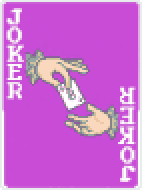
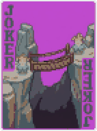
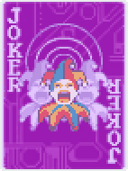
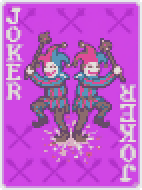
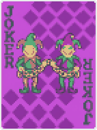
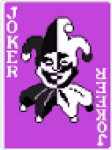
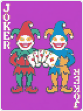
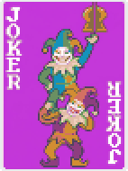
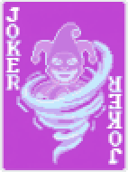

Two players, one run, one shared score against every blind. You win together and you lose together. Двое игроков, один забег, общий счёт против каждого блайнда. Побеждаете вместе и проигрываете вместе.
Unofficial fan mod for the PC version of Balatro. Early version: bugs happen. Неофициальный фанатский мод для ПК-версии Balatro. Ранняя версия: баги бывают.
Take turns playing hands. Your chips add up against one blind scaled for two.
Ходите руками по очереди. Фишки складываются против одного блайнда, усиленного под двоих.
Invite a Steam friend in one click. No codes, no server: Steam connects you directly.
Позови друга из Steam в один клик. Без кодов и сервера: Steam соединяет вас напрямую.
One wallet, one shop, shared vouchers. Plan your build together.
Один кошелёк, одна лавка, общие ваучеры. Собираете билд вместе.
Their hand and jokers on your screen, and every hand they play replayed with the full scoring animation.
Его рука и джокеры у тебя на экране, а каждая его рука повторяется с полной анимацией подсчёта.
3 shared slots and 9 rare jokers with their own art, that only work as a team.
3 общих слота и 9 редких джокеров со своей графикой, которые работают только в команде.
Optional resonance: the more evenly you both score, the bigger the XMult, whatever your builds. Or a hard 70% cap per player.
Резонанс по желанию: чем ровнее вы оба набираете очки, тем больше X, какие бы ни были билды. Или жёсткий потолок 70% на игрока.
Optional: 104 cards for two, every tarot and seal seen by both. Use tarots on your partner's cards.
По желанию: 104 карты на двоих, таро и печати видны обоим. Таро можно применять к картам напарника.
Turns, resonance, share cap, difficulty, evil bosses, deck and stake. Plus a solo test mode to try it alone.
Ходы, резонанс, потолок вклада, сложность, злые боссы, колода и ставка. И тест в одиночку, чтобы попробовать одному.
Rare, expensive, and they sit in 3 shared slots: every team joker works for both of you.Редкие и дорогие, лежат в 3 общих слотах: каждый командный джокер работает на вас обоих.

Once per turn, give 1 selected card from your hand to your partner.
Раз в ход отдай напарнику 1 выбранную карту из руки.
Shared deck onlyТолько с общей колодой
Copies your partner's rightmost Joker, like Blueprint. Passive effects too.
Копирует самого правого джокера напарника, как Чертёж. Пассивки тоже.

Your hand gets +Mult equal to 35% of your partner's last hand Mult.
Твоя рука получает +Множ. = 35% от множителя последней руки напарника.

X3 Mult if you play the same poker hand your partner played this blind.
X3 Множ., если играешь ту же покерную руку, что напарник в этом блайнде.

Beat your partner's previous hand: +X0.25 Mult to the chain for both. A weaker hand resets it.
Перебил прошлую руку напарника — цепь даёт обоим +X0.25 Множ. Слабая рука её сбрасывает.

X2.5 Mult if you play a different poker hand than your partner this blind.
X2.5 Множ., если играешь другую покерную руку, чем напарник в этом блайнде.

Once per blind, take a card from your partner's hand into yours.
Раз в блайнд забери карту из руки напарника себе.
Shared deck onlyТолько с общей колодой
Your last hand of the blind gets +Chips equal to 25% of what your partner scored.
Последняя рука в блайнде получает +Фишки = 25% от очков напарника.

Lost a blind but scored at least 75%? It counts as beaten. Once.
Проиграли блайнд, но набрали хотя бы 75%? Он засчитан. Один раз.
| You need | Нужно | Get it | Где взять |
|---|---|---|---|
| Lovely Injector | github.com/ethangreen-dev/lovely-injector | ||
| Steamodded | github.com/Steamodded/smods | ||
| MultiplayerAPI | github.com/Balatro-Multiplayer/BalatroMultiplayerAPI | ||
| Balatro Co-op | github.com/Dallowin/balatro-coop |
Lovely: put its .dll next to Balatro.exe (Steam → right-click Balatro → Manage → Browse local files).
Lovely: положи его .dll рядом с Balatro.exe (Steam → правой кнопкой по Balatro → Управление → Просмотреть локальные файлы).
Mods folder: Win+R → %AppData%\Balatro\Mods (create Mods if it's missing).
Папка модов: Win+R → %AppData%\Balatro\Mods (если папки Mods нет — создай).
Steamodded and MultiplayerAPI go into Mods. Remove the old Multiplayer mod if you have it.
Steamodded и MultiplayerAPI — в Mods. Старый мод Multiplayer, если есть, удали.
Balatro Co-op: extract the release zip into Mods, so you get Mods\BalatroCoop\BalatroCoop.json.
Balatro Co-op: распакуй зип из релиза в Mods, чтобы получилось Mods\BalatroCoop\BalatroCoop.json.
Start Balatro from Steam. Both players need the same Balatro Co-op version.
Запусти Balatro через Steam. У обоих должна быть одинаковая версия Balatro Co-op.
Co-op menu → Play via Steam → Invite next to your friend.
Меню коопа → Играть через Steam → Позвать напротив друга.
Your friend gets the invite and clicks Accept.
Другу приходит приглашение — он жмёт Принять.
They click Ready, you click Start.
Он жмёт Готов, ты — Старт.
Create lobby: the code is copied to your clipboard.
Создать лобби: код сам скопируется.
Your friend: Join with code and pastes it.
Друг: Войти по коду и вставляет его.
Ready, then Start.
Готов, затем Старт.
You must be Steam friends, both with Balatro started from Steam and the same mod version. Your friend can open "Play via Steam" — invites are listed at the top.
Вы должны быть друзьями в Steam, у обоих Balatro запущена через Steam и одинаковая версия мода. Друг может сам открыть «Играть через Steam» — приглашения вверху списка.
The second player hasn't joined, isn't ready, or has a different mod version (the lobby shows both versions).
Второй игрок не зашёл, не нажал «Готов» или у него другая версия мода (лобби показывает обе версии).
It's tested on Windows. Mobile versions can't load mods.
Проверено на Windows. Мобильные версии моды не поддерживают.